TRK Technology
An internal MLOps platform built from scratchSıfırdan kurulmuş bir iç MLOps platformu
*from days of setup to about ten minutes (CV-level description)**günlerce süren kurulumdan yaklaşık on dakikaya (CV düzeyinde anlatım)*At TRK Technology, I built an internal MLOps platform from scratch. Pipeline setup time decreased from days to about 10 minutes for 5+ data scientists. I also found a data-leakage risk and shipped a Dataset Management module to prevent it.
TRK Technology'de sıfırdan bir iç MLOps platformu geliştirdim. 5+ data scientist için pipeline kurulum süresi günlerden yaklaşık 10 dakikaya indi. Ayrıca bir veri sızıntısı riski buldum ve bunu önlemek için bir Dataset Management modülü yayına aldım.
- rolerol
- Software Engineer (AI Systems & MLOps Platform), Ankara · Sep 2025 – Jun 2026Yazılım Mühendisi (AI Sistemleri ve MLOps Platformu), Ankara · Eyl 2025 – Haz 2026
- stackteknoloji
- FastAPI · PostgreSQL · Vue.js · Vue Flow · Rust/WebAssembly
This was internal work for an employer. This page gives only the information on my CV: the problems, my decisions and the results. It contains no proprietary code, data, internal architecture or client information.
Bu, bir işveren için yapılmış iç bir çalışmaydı. Bu sayfa yalnızca CV'mdeki bilgileri verir: problemleri, kararlarımı ve sonuçları. Sayfada hiçbir tescilli kod, veri, iç mimari veya müşteri bilgisi yoktur.
1. The problems1. Problemler
- A team of 5+ data scientists ran every deep-learning experiment by hand.
- Each pipeline needed the same boilerplate code.
- The train/test split strategy of the team had a data-leakage risk.
- A comparison of model variants needed hardcoded configuration changes.
- 5+ kişilik bir data scientist ekibi her deep learning deneyini elle yürütüyordu.
- Her pipeline aynı boilerplate kodu gerektiriyordu.
- Ekibin train/test ayırma stratejisinde bir veri sızıntısı riski vardı.
- Model varyantlarının karşılaştırılması hardcoded konfigürasyon değişiklikleri gerektiriyordu.
2. Platform overview2. Platforma genel bakış

3. What I built3. Ne geliştirdim
- I built an internal MLOps platform from scratch with FastAPI, PostgreSQL and Vue.js. Pipeline setup time decreased from days to about 10 minutes.
- I designed a DAG-based orchestration engine with Vue Flow. Users build and run preprocessing and evaluation pipelines visually. Configuration time decreased by an estimated 60%.
- I built a layer-by-layer architecture configurator. I compiled 5 model types to Rust/WebAssembly for in-browser inference with no server round-trip.
- FastAPI, PostgreSQL ve Vue.js ile sıfırdan bir iç MLOps platformu geliştirdim. Pipeline kurulum süresi günlerden yaklaşık 10 dakikaya indi.
- Vue Flow ile DAG tabanlı bir orkestrasyon motoru tasarladım. Kullanıcılar ön işleme ve değerlendirme pipeline'larını görsel olarak kurar ve çalıştırır. Konfigürasyon süresi tahmini %60 azaldı.
- Katman katman bir mimari konfigüratörü geliştirdim. 5 model tipini, sunucuya gitmeden tarayıcıda inference için Rust/WebAssembly'e derledim.
The data-leakage fixVeri sızıntısı düzeltmesi

I found a critical leakage risk in the split strategy of the team. I explained the risk and aligned the team on a fix. Then I shipped a Dataset Management module with version-controlled branches and lineage tracking. This module kept the models valid in all downstream experiments.
Ekibin ayırma stratejisinde kritik bir sızıntı riski buldum. Riski açıkladım ve ekibi bir çözüm üzerinde uzlaştırdım. Ardından sürüm kontrollü dallar ve lineage takibi sunan bir Dataset Management modülü yayına aldım. Bu modül, tüm alt deneylerde modellerin geçerli kalmasını sağladı.
4. Results4. Sonuçlar
5. Design Q&A5. Tasarım Soru-Cevap
How did you convince the team about the leakage risk?Ekibi sızıntı riski konusunda nasıl ikna ettin?
I explained the risk to the team and proposed a fix. After the team agreed, I built the Dataset Management module. Thus the correct process became part of the tool.
Riski ekibe açıkladım ve bir çözüm önerdim. Ekip kabul ettikten sonra Dataset Management modülünü geliştirdim. Böylece doğru süreç aracın bir parçası oldu.
Why WebAssembly for inference?Inference için neden WebAssembly?
Users tuned model variants in the UI. In-browser inference gave immediate results with no server round-trip.
Kullanıcılar model varyantlarını arayüzde ayarlıyordu. Tarayıcı içi inference, sunucuya gitmeden anında sonuç verdi.
Is the 60% decrease a measured value?%60'lık azalma ölçülmüş bir değer mi?
The 60% value is an estimate, not a controlled measurement. My CV states it as an estimate for this reason.
%60 değeri kontrollü bir ölçüm değil, bir tahmindir. CV'm bu nedenle onu tahmin olarak belirtir.